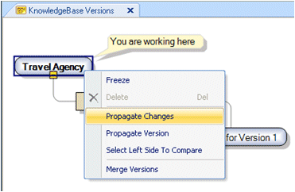
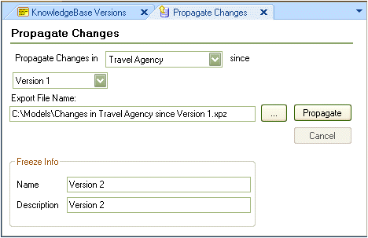
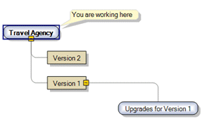

The Propagate Changes operation is used to distribute the generated changes between two Knowledge Base Versions into an xpz file. To propagate the changes between two versions, open the Knowledge Base Versions Tool Window, right-click on the desired version and select "Propagate Changes"  The Propagate Changes Tool Window is displayed:  Notice that the Propagate Changes operation can be performed from a Development Version as well as from a Frozen Version. When selecting a development one; a frozen version will be generated to record the version status; you will have to fill the Freeze Info section. Automatically the latest frozen version will be selected in the since Combo box; but you can select the frozen version you desire. In this case the suggested xpz file in the Export File Name location is "Changes in TravelAgency since Version 1.xpz" which read as: export all the differences from the trunk version "Travel Agency" since the frozen version "Version 1" and freezes a "Version 2" version in order to be able to propagate changes in the future using the latest freeze Version. Select Propagate and the changes will be exported to the xpz file. Notice that the "Version 2" version has been added:  See Also
|
| Backlinks | |
| Import a Propagation of Changes | Propagate Version |